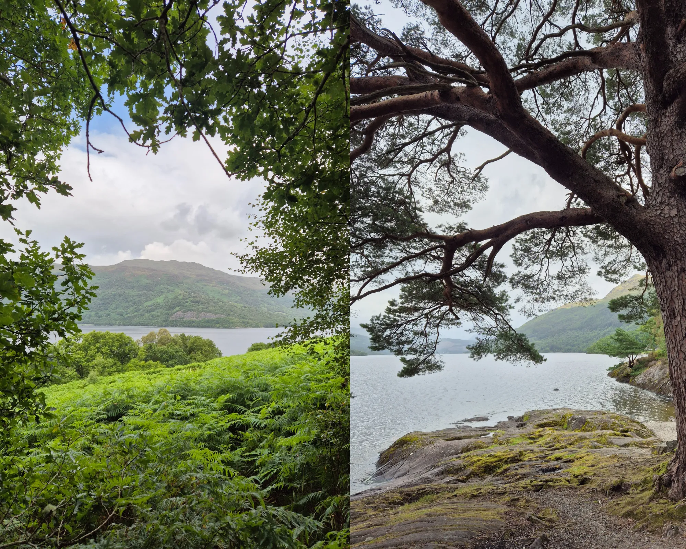
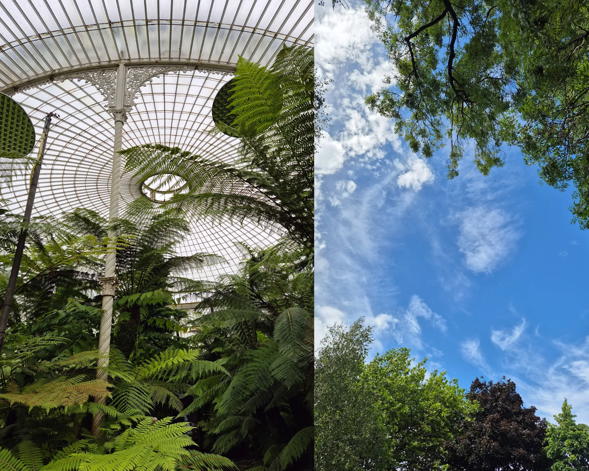
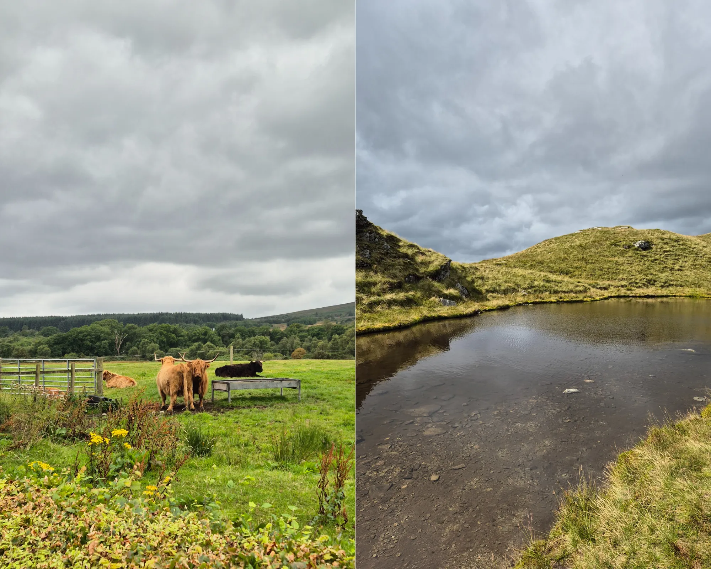
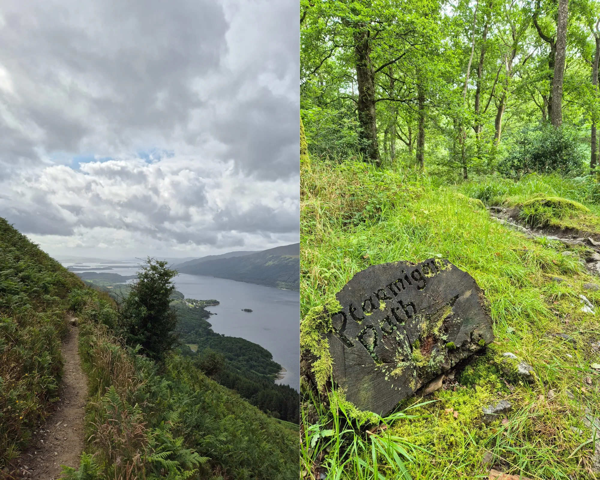
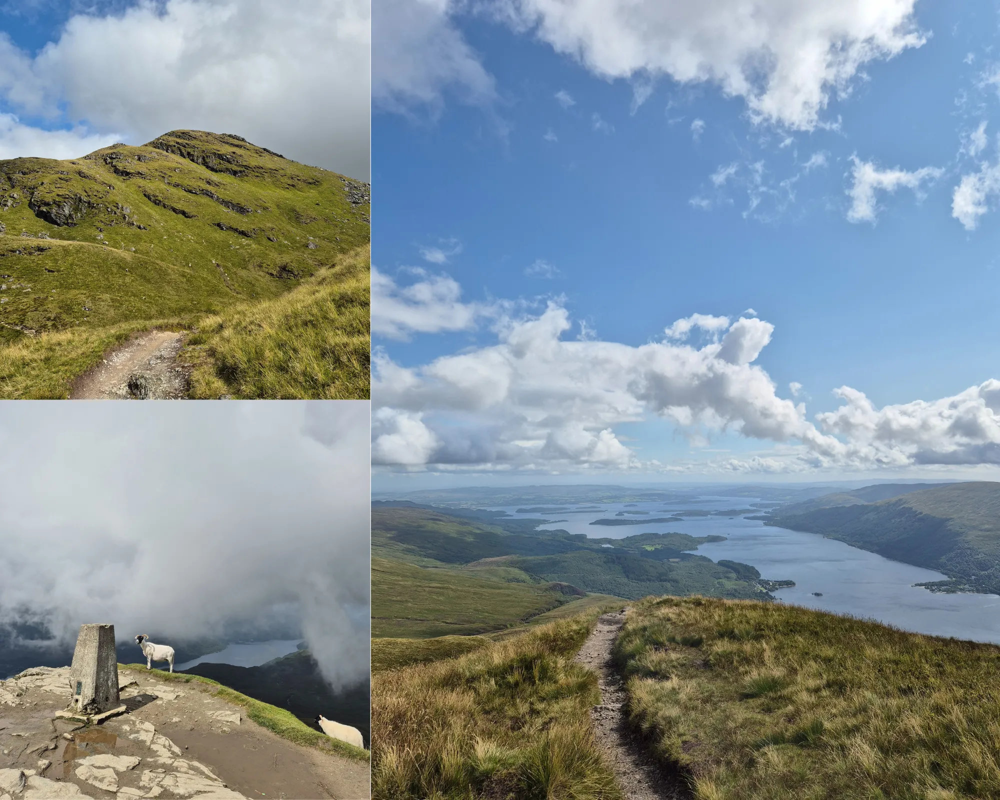
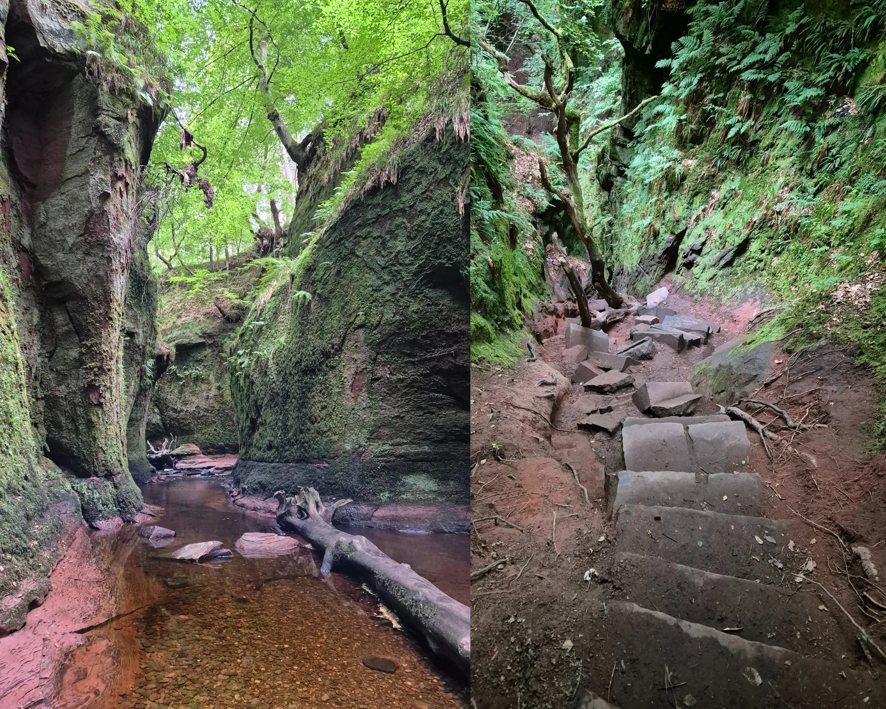
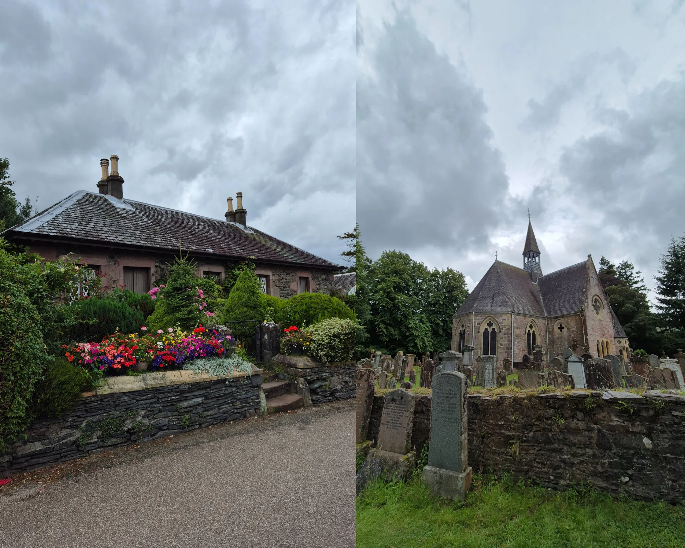
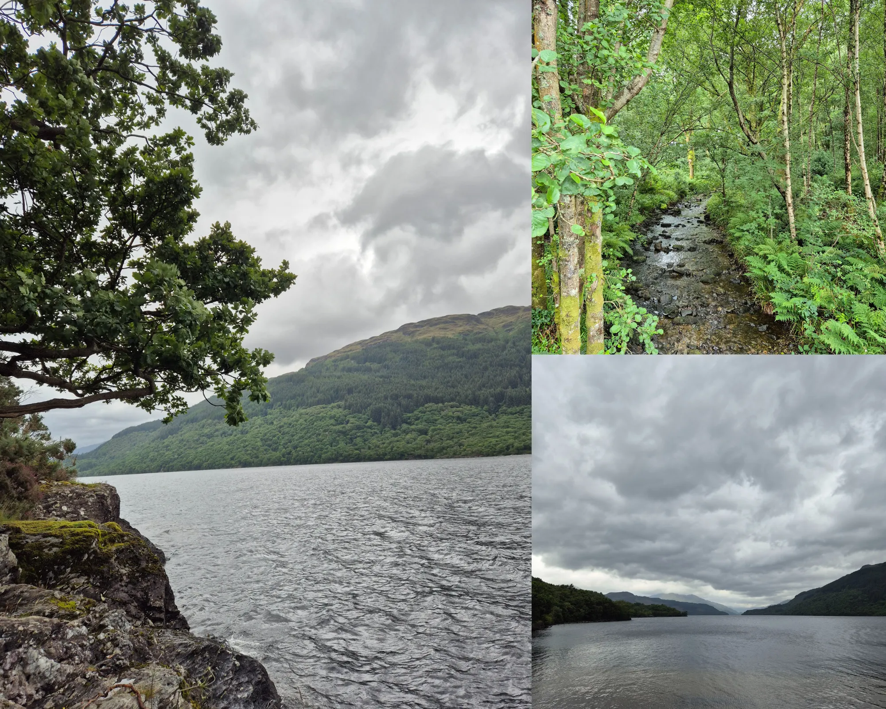
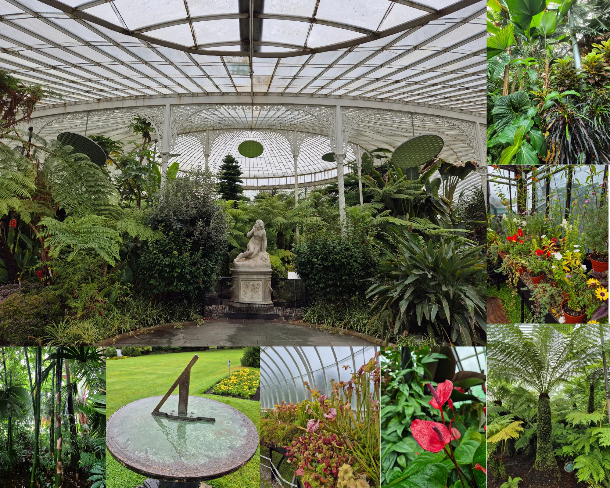
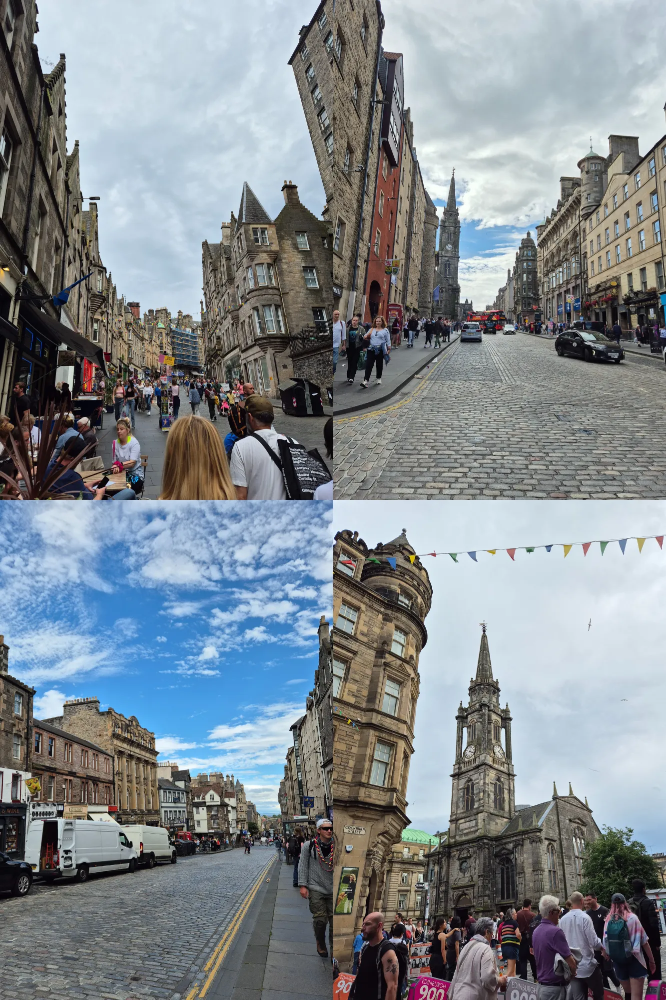

Loch Lomond 4-day itinerary
This trip wasn’t exactly planned in advance. In June, friends of ours told us they were going up to Edinburgh for the first weekend of August. So, we thought it would be nice to join them. We booked the train tickets and proceeded to forget about it. A month went by and we remembered: “Hey, don’t we have train tickets to Edinburgh in a few weeks?”. We started looking for accommodations and were quite surprised by the prices and lack of availability. When we told our friends this, they answered with something that might be obvious to many: August means Fringe in Edinburgh.
According to the official site:
“The Fringe is a three-week festival of performing arts that takes place in Edinburgh every August. Its story dates back to 1947, when eight theatre groups turned up uninvited to perform at the Edinburgh International Festival.”
What this means, in practical terms, is that the city is flooded with artists and performance enthusiasts. We are not ones for crowds and the whole adventure was starting to exceed our budget. So we pivoted. We researched options on the outskirts of Edinburgh, southern Scotland and Northern England. Some of the sites that caught our eye were:
- Isle of Arran
- Fife: St Andrews, East Neuk, Crail, Anstruther, Pittenweem, St Monans, Elie and Earlsferry
- Puck’s Glen
- East of Edinburgh: St Abbs, Berwick-upon-Tweed, Tantallon Castle
- Loch Lomond area
- Dumbarton Castle
- Inchmahome Priory
From these options, the one that sounded best to us given the amount of time was Loch Lomond. One of the main draws was Ben Lomond: a Scottish mountain, specifically a Munro (a mountain over 3,000 feet). It's known for being the most southerly Munro.
Transport: plane, train or car?
When thinking about transport for this trip, we had two main stages: getting to Scotland and moving around once there. For the first stage, we booked the train tickets without much forethought, evidenced by our complete ignorance of the existence of the Fringe festival. The train can last between 4 - 6 hours to overnight (see the Caledonian Sleeper), depending on the service booked. In our experience, the train can get boring/exhausting and it's not cheap. So it's worth considering taking a plane. But it really depends on the options available to you.
For the second stage, we took out a calculator and we estimated the costs of the different trains, buses and ferries (yes, ferries) we would need to take to follow our tentative itinerary. The cost of renting a car versus using public transport were very similar. So the deciding factor ended up being the logistics needed to hike Ben Lomond.
This hike was our main activity and we wanted to start early and didn’t know how long it would take us to complete. Specifically, we would stay in Balloch. And to get from Balloch to the Ben Lomond trailhead we would need to take a bus to Luss and then the waterbus to Rowardennan. But there seemed to be conflicts between the timetable of the waterbuses and our plans.
Recommendation: If you are evaluating using the waterbuses in Loch Lomond, look at the timetable carefully to make sure the available days and time work for you. Some waterbuses only operate on weekends.
In the end, we ended up renting a car. It was our first foray into driving on the left side of the road. Luckily, we didn’t have any problems with the car or the driving. And it gave us the flexibility to wake up at 6 in the morning to visit the Devil’s Pulpit (more on that later).
4-day Itinerary in Loch Lomond & The Trossachs National Park
Day 1: London → Scotland
While waking up bright and early might not be our favourite thing, the train ride is quite lengthy. So we woke up around 4:30 in the morning to catch our 6:16 Avanti West Coast train at Euston Station. And as I always say, but not always do, “you can sleep on the train”.
We were set to arrive at Waverly Station in Edinburgh at 12:20. We chatted with our friends for the first bit of the journey. Then there was a bit of napping and a bit of audiobook listening while looking out the window. (Highly recommend “Nothing to see here” by Kevin Wilson).
When we finally made it to Scotland, we were starving. So we popped into a random pub and ate pies. Just walking a few blocks from the station, we could see the effect of the Fringe Festival. The city was overflowing with people.
Once full, we headed back to the North Bridge, right by Waverly Station, to take the 100 Airlink Bus to Edinburgh Airport. We bought a return ticket knowing we had to get back to the station at the end of the trip.
To say the bus was slow, is an understatement. Between stoplights, wayward pedestrians and Fringe related detours, the trip felt eternal. When we finally got to the airport and walked to the Rent a Car offices, we got our car and started driving to Loch Lomond.
At first, regarding the “driving on the wrong side” bit, it took the both of us using our full attention to drive, follow the traffic rules and navigate. But luckily, we got on a highway early on and it was a friendlier setting to get used to the new flipped perspective.
After driving for an hour or two, we made it to our Bed and Breakfast, Dumbain Farm. To make the reservation, I just exchanged a few emails. So it was very simple and easy. The room was beautiful and breakfast was yummy and very filling. We ended up paying in cash at the end of our stay (we had pounds left over from a previous trip).
That first afternoon, we went for a walk at Balloch Castle Country Park and the surrounding green areas. It very quickly started to rain but that didn’t stop us from enjoying the sound of the rain on our one umbrella and the scenery.
We started getting hungry and my hiking shoes were absolutely flooded, so we went into The Balloch House for dinner. We then proceeded to have the best steak and ale pies we ever had. Shoutout to the mashed potatoes and greens which were the perfect sides and were impeccably seasoned.
With full bellies and very wet shoes, we went back to the B and B to get everything ready for the hike the following day.
Day 2: Ben Lomond hike
Our plan for the second day was to hike to the top of Ben Lomond, the most southerly Munro.
Ben Lomond Walk Stats
- Distance: 12km / 7.5 miles
- Time: 4.5 - 5.5 hours
- Ascent: 990m
- For more information and GPX file, go here
- Alltrails we followed
We drove to the Ben Lomond car park and parked our car. When we visited, the machine to pay for the parking was out of order. But that may change in the future. We got our backpacks ready and started the hike.
The trail can be followed as a circular path or you can go up and down using the same path. We read somewhere that the Ptarmigan Ridge path had the best views of the two branches, so chose to use it for the ascent and descent. And let me tell you, the views did not disappoint.
The first bit of the path is mostly flat and follows backstreets but soon enough, you can see a moss covered tree stump with “Ptarmigan Path” carved into it, There is when the ascent starts. Given that we were going up a mountain, I don’t really know why I was so surprised that there was so much …going up. It might be obvious to some but still worth mentioning: be prepared for near constant altitude gain. It is very much worth it, in my opinion.
Following the clearly discernible path, we passed through a forest on the lower sector followed by grass and stones for most of the rest of the way. There are short bouts of flatter areas and parts of the path are paved with stones.
Around halfway up, my energy was really dwindling. Luckily (or not), around three quarters of the way up the trail is less steep for around 1 km. But right after that, the last ascent awaits. You can imagine my face when I saw we had to climb/scramble up rocks to get to the summit. We were close but it felt very far. I don’t think it was technically hard, but it requires a bit more concentration and some strength to go up each rock. Under a light drizzle, my partner really had to rally to cheer me up that final stretch. He even carried my backpack for me.
When we finally made it to the summit, with its welcome committee of three sheep and a cloud, I felt as if I had conquered the entire world. I also felt extremely hungry. One of the things we learned on this hike was to always take extra food on longer hikes. We had a bunch of snacks with us but it was definitively not enough for the length of this hike. It took us around three hours to get to the summit and we were determined to have lunch there. But we definitely did not have enough snacks to do so and still keep ourselves fueled properly all the way up. I think that was why I was struggling by the end of the ascent. You live, you learn.
After some lunch and a rest enjoying the views, we started the careful descent. I mean careful because the rocks we had to climb up to get to the summit were looking very much like a slide after the drizzle when going down. We had appropriate hiking shoes with good grip and patience, so we managed to pass that section without any incident.
Going back down using the Ptarmigan Ridge path gives you many opportunities to marvel at the surrounding lakes and mountains. We took many pictures and arrived back at the car in a bit under two hours. Gravity is a wonderful thing but always be careful with your knees and mind your footing.
All in all, it was a wonderful day to summit our first Munro. Hopefully, it won’t be the last.
Day 3: Loch Lomond and surrounding towns
For day 3, we had originally planned to walk up Conic hill. But decided to focus on the lake and towns of the park instead. It was an overcast day and we liked the idea of taking it slow after the hike the day before.
That being said, we wanted to visit the Devil’s Pulpit on Finnich Glen, of Outlander fame. After quite a bit of research online, we found that the parking situation on site was tricky and that the access to the glen itself could be complicated or unsafe. So we decided to go there very early, around 6 AM, and try our luck, keeping in mind that we might not be able to see anything.
At 6 AM, the alarm woke us up, barely, we changed and headed out. On the small “parking” (a few metres from this pin) there was one other car, so we parked easily. Armed with this AllTrails GPX file, we embarked on a mission to find Zaine’s ladder. We had to climb over a fence that was very stepped on. After that we enjoyed the short trek through a green forest.
We found the stairs and, being honest, had a good laugh. They were all over the place and were also very slippery. We had shoes with good grip and helped each other out for the descent. So we arrived at the stream in one piece. If you visit, be very careful. There are many stories of people getting injured and even having to be airlifted out.
The glen features the stream surrounded by reddish sandstone walls and bright green foliage and moss peaking from the top. To see The Devil’s Pulpit, a rock formation in the gorge that resembles a church pulpit, you have to walk a bit on the stream to the left. I was too cold to get my feet on the water, but my partner walked a few meters on the stream bed.
Overall, it’s a beautiful place but hard to get to. It's not prepared to be visited and caution is recommended when considering going.
After our early morning adventure, we went back to the BnB to have breakfast. Once full, we headed to the village of Luss. It features iconic stone cottages and lovely views from the lake coast. We parked our car in this car park and walked to the village. Once there we visited the cottages and the pier. We then walked over to Luss Parish Church and followed a path along a stream and through a field back to the car park.
After that, we drove to Firkin Point to sit on the beach and have lunch. We weren’t the only ones with the same idea. There were a few families eating and hanging out. We wanted to explore the area a bit more and walked north on the path parallel to Loch Lomond. We found a small beach and read for a while. I recommend this paved path if you are in the area.
On the drive back to Balloch, craving a coffee, we stopped at Auchentullich Farm Shop. We had ice cream and coffee and watched the highland cows for a while. Later, for dinner we ate fish and chips from Blue Lagoon Fish & Chips and called it a night.
Day 4: Glasgow + Edinburgh → London
On the last day, we had to return the car at noon back in Edinburgh. So we opted to visit the Glasgow Botanic Gardens in the morning. The day was gloomy and rainy but we were able to take a turn around the gardens and particularly enjoyed the glasshouses.
After missing a few turns returning the car to the airport, we took the 100 Airlink Bus back to Edinburgh. It was slow again and we were starving. Luckily, we found Salt Horse Beer Shop, Bar & Burgers and devoured a couple of burgers.
After that, we had a couple of hours to kill before the train so we hung out at the park by the station. The sun was finally out and it was a lovely end to our trip.
